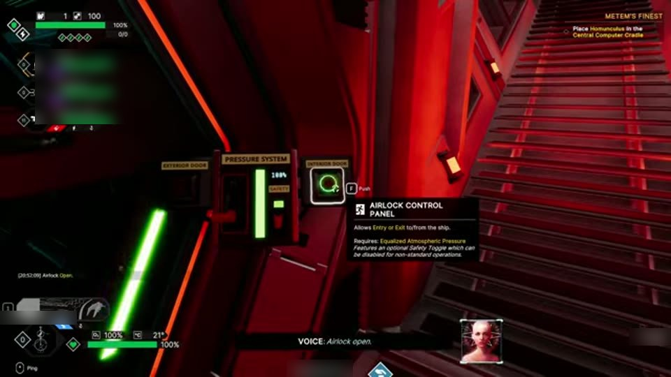
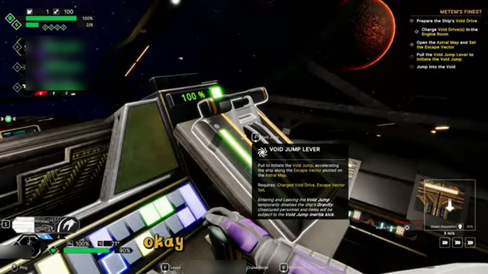
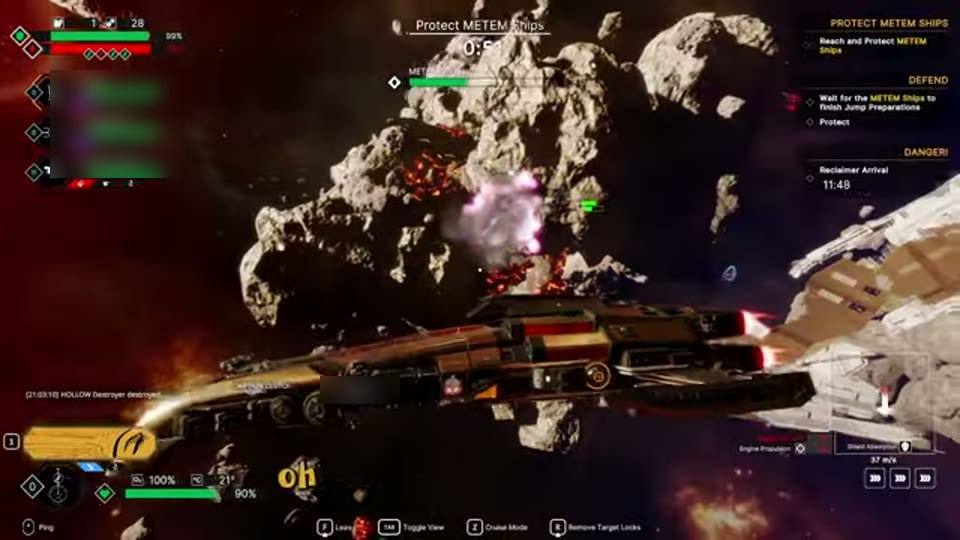
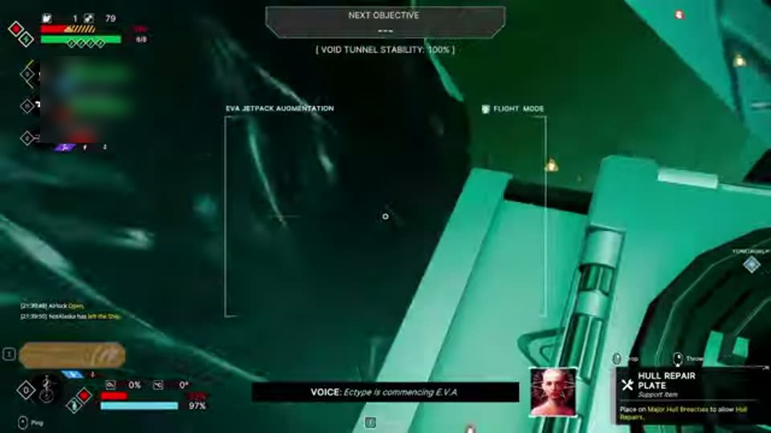
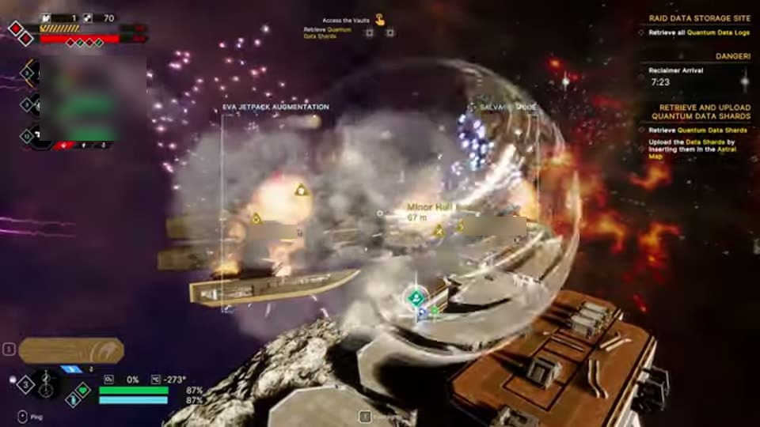

Void Crew review: why I should never be the captain

Void Crew is a co-op roguelite for one to six players from Hutlihut Games, published by Focus Entertainment and out on Steam since November 25, 2024. You crew a spaceship against an enemy called the Hollow. Someone pilots, someone works the turrets, someone repairs the hull, and everybody is supposed to keep the air inside. I played with three friends, and I made myself captain.
My first act as captain was the airlock. I opened the outer door without closing the inner one and without a suit on, and the room froze me solid. A little later I pulled the void jump lever without telling anyone to sit down. Nobody was in a seat, so all three of my crew died on the jump.

We failed that mission anyway. We were supposed to protect friendly ships. I called my own dodging excellent, and the enemy destroyed the ships anyway. Then I went outside with a jetpack to repair, left the airlock doors open, and the whole ship froze and lost its air. Later I defended myself: "It's not like if you open your house door, you have to have another door closed in your house."

My crew got back at me. One friend locked me in the airlock and cycled it right before a jump, which killed me. Later the same friend made me play the calibration panel minigame over and over until the temperature and the oxygen came back. On my own I once stepped outside during a jump to fix the hull and died instantly.

We held a vote on who should be captain, and a friend kept score. When I was captain we succeeded at zero missions. When a friend was captain we succeeded at two. Near the end, an enemy cruiser blew up our parked ship while I was off exploring a space station.

We succeeded at no missions with me as captain and I still liked the game. One wrong switch hurts everybody, and that is exactly why it is fun with friends. Bring friends who read the controls first, and let someone else be captain. Store page: Void Crew on Steam
More games I wrecked with friends: the Jump Space spaceship run, the Lethal Company duck crew and Alien: Isolation.